„…[norodul ales] se va duce, și se va apuca să slujească altor dumnezei și se va închina acelora - sau soarelui, sau lunii sau la toată oștirea cerească - ceea ce Eu n-am poruncit” (Deuteronomul 17:3). „Și au schimbat adevărul lui Dumnezeu întru minciună, și au cinstit și au slujit făpturii mai mult decît Făcătorului, Care este binecuvîntat în veci. Amin!” (Romani 1:25)1.
Fiind atît de înfricoșat eretic, Romano-Catolicismul este neapărat și păgîn. Căci - călcînd una sau mai multe dogme ale dreptei credințe, lepădîndu-te de Dumnezeu-Adevărul - ajungi numaidecît la vechiul păgînism, adică la înșelările dintotdeauna ale Satanei. Fiindcă el (Satana) nu mai are nevoie să născocească ceva nou, de vreme ce acelea au fost de ajuns să smintească desăvîrșit omenirea2. Nimic de mirare așadar că Romano-Catolicismul este un eres cu totul păgîn, precum se va arăta prin cîteva pilde, căci pentru mai multe nu avem loc aici.
Trebuie să fim cu luare aminte și să despărțim această temă în două: o parte care privește legăturile Romano-Catolicismului cu vechiul păgînism a toată lumea (adică acela al împărățiilor trecute ce au stăpînit lumea: Babilonul, Asiria, Egiptul, Helada și Roma) și o a doua privitoare la acelea cu păgînismul contemporan (ale cărui cele mai înfricoșate eresuri sînt hinduism-ul, buddh-ismul, vrăjitoria africană Voo-doo și vrăjitoria druidă). Despărțirea aceasta are doar pricini istorice, căci păgînismul este unul singur, fiind insuflat de același duh al Satanei care nici nu piere, nici nu se schimbă, decît în mai rău.
Cinstirea cerului și a luminătorilor cerești
„Și Dumnezeu S-a întors, și i-a dat pe ei să slujească oștirii cerului, precum este scris în cartea Proorocilor: «Și ați purtat cortul lui Moloh și steaua dumnezeului vostru Remfan, chipurile pe care le-ați făcut, ca să vă închinați la ele!» (Amos 5:25-27)” (Faptele Apostolilor 8:42, 43)3.
Simplu spus, orice păgînism înseamnă întîi de toate cinstirea stihiilor, între care cele mai văzute și mai simțite sînt cerul și luminătorii cerești mari și mici: soarele, luna și stelele. Căci înrîurirea lor asupra vieții pămîntești este atît de mare, încît omenirea despărțită de Dumnezeu le-a cinstit dintotdeuna și le cinstește și acum ca pe niște ziditori ai lumii și proniatori. Adică necredincioșii fac întocmai ceea ce nu a vrut Dumnezeu să se întîmple, căci de aceea a zidit El mai întîi cerul și firea luminii în ziua întîi și luminătorii abia în ziua a patra.
În cele ce urmează, să cercetăm urmele acestei idolatrii așa cum le păstrează eresul Romano-Catolic.
Mai jos, avem simbolul ochiului strălucind încadrat în triunghi:
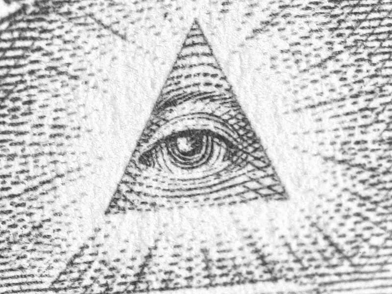
Catolicii și unii Protestanți (ca și mulți Ortodocși de-ai noștri) cred că acest simbol ar fi acela al Atotputernicului Dumnezeu și că triunghiul e simbolul Sfintei Treimi. Nu este deloc așa! De fapt, e vorba de ochiul lui Horus, zeul Egiptean cu cap de șoim, crezut a fi zeul-cer/soare. Să luăm aminte (între altele) că ochiul atotvăzător încadrat în triunghi este cel stîng! Este ochiul stîng pentru că mitologia ne spune că Horus și l-a pierdut în lupta lui cu un alt zeu Egiptean, Seth, iar apoi i-a fost pus la loc de mama sa, Isis. Ochiul era de asemenea un simbol al puterii nimicitoare a soarelui (sîntem în Egipt!). Într-un text funerar, ochiul spune despre sine așa: „Eu sînt ochiul atotvăzător al lui Horus, a cărui vedere pricinuiește groază.”
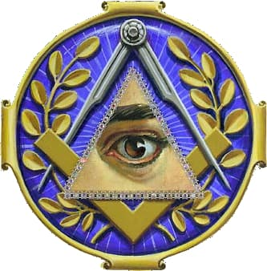
Ochiul acesta este și unul din simbolurile lui Satan. De aceea și este atît de răspîndit la Masoni, precum vedem și în poza de mai sus.
„[Împăratul Iosia] a nimicit caii pe care regii lui Israel îi așezaseră în cinstea soarelui înaintea intrării templului Domnului, aproape de locuința eunucului Netan-Melec cea din Parvarim, iar carul soarelui l-a ars” (4 Împărați 23:11).
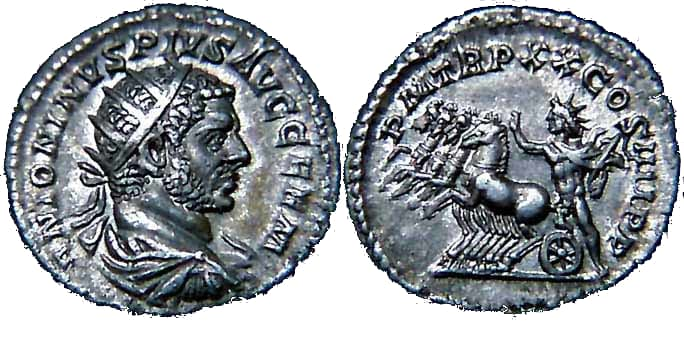
Iată o monedă romană din veacul al treilea după Hristos, pe al cărei revers se vede Helios-Apollo (zeul Greco-Roman al soarelui), într-un car de luptă tras de patru cai. Este așa numitul „Sol in Quadriga”, iar inscripția îl numește SOLI INVICTO. Poartă o coroană de foc, la fel ca a împăratului de pe fața monedei, căci coroana e și ea un simbol solar.
Mai jos, avem un mozaic foarte asemănător, păstrat la Vatican. Îl înfățișează pe „Christ” ca zeul-soare Helios, înălțîndu-se în carul său de luptă tras de patru cai (din care se mai păstrează doar doi). Mozaicul e tot din din veacul al treilea.
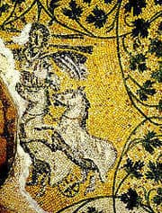
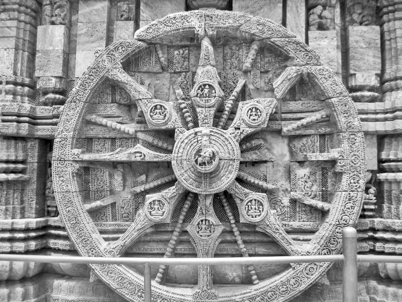
Aici, vedem o roată (cu 16 spițe) a soarelui, din templul din Korarak (India), care este asociată cu ocultismul și astrologia. Seamănă bine cu roata unui car de luptă.
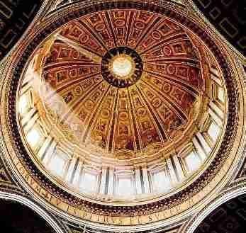
Aici, avem o fotografie a cupolei Domului Sfîntului Petru. Băgați de seamă discul solar cu 16 raze! Și într-adevăr, lumina pătrunde prin deschizătura cupolei și se vede ca un răsărit de soare în mijlocul roții.
Luați seama la detaliul capiștii poloneze de mai jos: triunghiul fațadei e piramida masonică desăvîrșită, ochiul cu raze despărțindu-i vîrful. Triunghiul închipuie de asemenea și compasul zidarilor (masonilor) de piramide și piramida însăși.
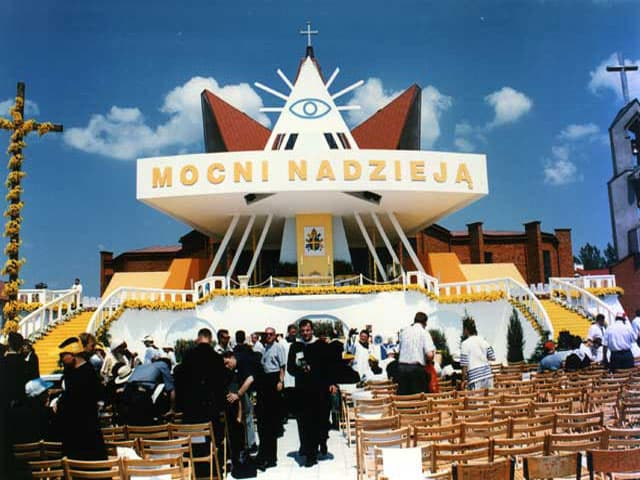
Aceasta e o monedă din vremea împăratului Constantin:
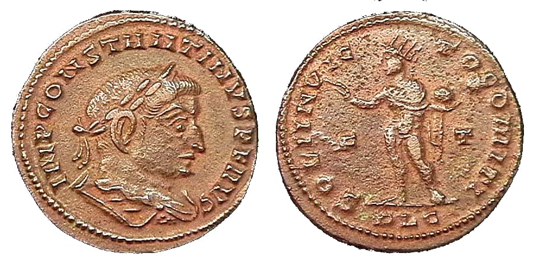
Pe revers, citim inscripția SOLI INVICTO COMITI – [ÎN CINSTEA DUMNEZEULUI] SOARE, TOVARĂȘUL NEBIRUIT [AL ÎMPĂRATULUI CONSTANTIN], cu zeul-soare purtînd coroana de raze, cu o mînă ridicată spre binecuvîntare și cu cealaltă ținînd un glob. Dedesubt, avem o monedă a papei Innocent XII, datată 1698, cu o gravură foarte asemănătoare, reprezentîndu-l pe „Christ” și inscripționată IPSE EST PAX NOSTRA – EL ESTE PACEA NOASTRĂ.
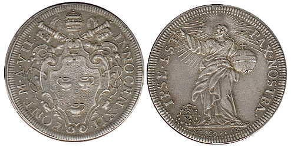
Coroana de raze poate fi văzută în întreaga iconografie Romano-Catolică, în forma aureolei/nimbului/haloului. Catolicii înșiși mărturisesc obîrșia păgînă a acestora: „Haloul sau cercul care se crede a reprezenta un inel de lumină, simbolizează lumina «grației» [?] lui Dumnezeu. Poate fi recunoscută în artă ca fiind același lucru cu aureola, nimbul și «gloria» [?]. Aureola este un nor de lumină de formă ovală înconjurînd întreaga figură. Nimbul este un fel de nor de lumină în jurul capului. «Gloria» este o lumină pe care o răspîndește trupul personajului. Păgînii înfățișeau acestea înainte de Era Creștină pentru a arăta puterea [personajului]” (The Catholic Universe Bulletin, Official Newspaper of the Cleveland Diocese, august 1942).
Ce e «grația», ce e «gloria»? Nimic altceva decît puterea trufașă, păgînă și trupească. Aureola zugrăvită pe icoanele ortodoxe închipuie lumina trupului de slavă al lui Hristos-Dumnezeu (vezi icoana Schimbării la Față, sau pe aceea a Învierii). La fel, nimbul închipuie la noi fie slava lui Dumnezeu (în icoanele Mîntuitorului Hristos ca om), fie lumina netrupească a sfințeniei bine-plăcuților Lui. În ce privește așa-zisul „halou”, acesta nu se află în iconografia creștină, fiindcă nu are nici o noimă. [...]
Simbolurile păgîne pe care le găsim în amănunte, le putem vedea însă și în mare, în însăși arhitectura Vaticanului. [...]
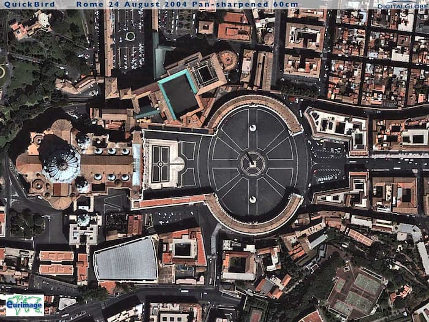
Aici, avem o vedere a pieței Sfîntului Petru. Palatul papal se află în partea stîngă. Se vede numaidecît că cercul pieței cuprinde desenul roții și al stelei cu opt raze a zeiței Ishtar. Iar în mijlocul cercului se află osia roții: un obelisc egiptean, adus de la Heliopolis la Roma de împăratul Caligula. Obeliscul este un simbol falic, dar și solar. Unii zic că „obelisc” înseamnă chiar „falusul lui Baal” (Despre obelisc va fi vorba și mai jos.)
Iată încă o fotografie a centrului pieței Sfîntului Petru. Se poate vedea că în jurul obeliscului, în mijlocul marii roți solare cu opt spițe, mai este o mică roată solară cu patru spițe, același simbol găsit pe piatra de altar din templul lui Baal de la Hatzor!
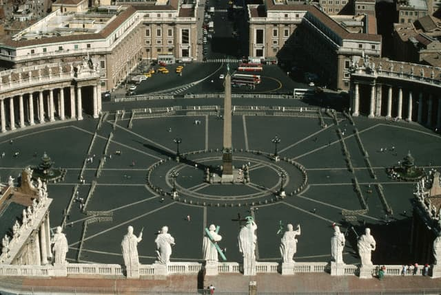
Aceleași lucruri le regăsim și pe reversul unei monede aniversare a pontificatului lui Ioan Paul II, obeliscul, roata solară din piața Sfîntului Petru și o izbucnire de lumină solară ieșind din însăși bazilica. Legătura dintre simboluri este vădită.
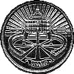
„Să nu-ți ridici stîlpi idolești [matstsebah], care sînt urîți de Domnul Dumnezeul tău!” (Deuteronomul 16:22)
Obeliscul a fost un obiect al credinței păgîne din vechime. Istoricul Diodorus povestește de un obelisc de vreo 40 de metri înălțime, înălțat de împărăteasa Semiramis în Babilon. Obeliscurile au avut o mare răspîndire în credința egipteană. Multe au rămas în Egipt, dar unele au fost mutate în marile capitale masonice: cele mai mari în Central Park (la New York), în Londra, în Place de la Concorde din Paris și în Piața Sfîntului Petru din Roma.
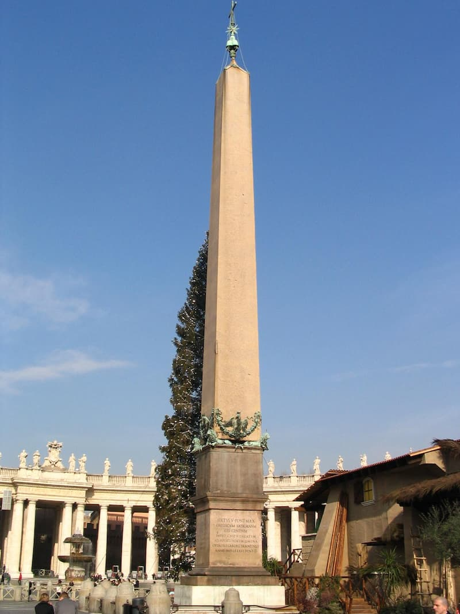
Dintru început, obeliscul a fost legat de cinstirea soarelui. Păgînii credeau că obeliscul avea de asemenea o însemnătate sexuală. Judecînd ei că prin împreunarea trupească se năștea viață, mădularul bărbătesc era socotit, alături de soare, un simbol al vieții. Asta însemna obeliscul. (Cuvîntul „chipuri” din Biblie este tălmăcit din cîteva cuvinte ebraice. Unul dintre ele, „matzebah”, înseamnă „chipuri în picioare” (înălțate), adică obeliscuri. Altul este „hammanim”, care înseamnă „chipuri ale soarelui”, adică tot obeliscuri.) Simbolul obeliscului era să fie așezat în sus, adică spre a ținti și a arăta către soarele ce se înalță. De aceea obeliscul era așezat în fața templului păgîn. Un obelisc era așezat la intrarea templului lui Tum și altul înaintea templului lui Hathor, zeul cu cap de șoim al Egiptului.
După ce au cucerit Egiptul, Romanii au îmbrățișat și credința egipteană a „misterelor” și au adus de acolo multe obeliscuri. Astfel, acel diavol îmbrăcat în piele numit „Caligula”, împărat între 37-41 după Hristos, are un obelisc la Vatican, adus din cetatea Heliopolisului în piața de azi a catedralei Sfîntului Petru. Iar „Heliopolis” („Orașul soarelui”) este numele grecesc al lui „Bethshemesh”, care a fost centrul egiptean al credinței în zeul Soare din vechime. În Vechiul Testament, aceste obeliscuri ale templelor soarelui din Egipt sînt pomenite ca „chipuri ale iui Bethshemesh” (Ieremia 43:13).
Obeliscul de granit roșu are aproape 30 de metri înălțime și cîntărește 320 de tone (cîtă osteneală să-l muți și să-l ridici la loc!). A fost mutat pe locul actual în 1586, de papa Sixtus V, care a osîndit la moarte pe oricine ar dărîma obeliscul4.
Dar obeliscul cel mai mare se află în piața Sfîntului Ioan din Lateran. A fost făcut în vremea Faraonului Thutmoses al III-lea și a stat în templul lui Amon din Theba (Karnak). Apoi, a fost adus la Roma de împăratul Constantin (317-361) și așezat în Circus Maximus. În 1587, papa Sixtus al V-lea a dezgropat obeliscul - care căzuse, se rupsese și fusese uitat de mult – l-a reparat și l-a așezat în piața Sfîntului Ioan din Lateran. E destul de însemnat să zicem ca acest obelisc poate să fi fost văzut de către Moisi în Egipt. Acum, acest obelisc, gîndit pentru a-l cinsti pe zeul-soare, stă lîngă ceea ce Catolicii numesc a fi „mama tuturor bisericilor”, catedrala oficială a episcopului Romei, papa, ceea ce ne aduce în minte locul de la Apocalipsa 17:5, despre Biserica cea apostată.
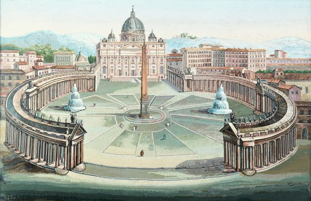
Deci în Piața Sfîntului Petru, găsim simbolul lui Baal înconjurat de simbolul lui Ishtar, iar în mijloc obeliscul egiptean, toate însemne ale păgînei cinstiri a soarelui.
De ce a fost primit acest simbol păgîn în viața Bisericii Romano-Catolice? Pentru nici o altă pricină decît aceea că Romano-Catolicii sînt nu mai puțin păgîni și antihriști decît blestemații de Dumnezeu Egipteni.5
În cetatea („creștină” a) Romei, găsim multe obeliscuri, dar și piramide.6
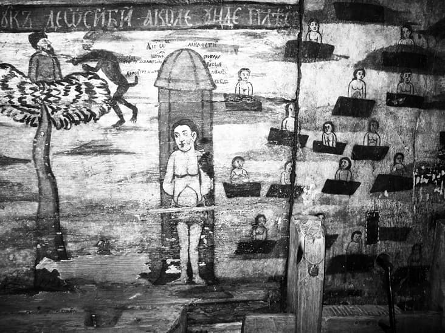
1 Stih pe care Teofilact îl tîlcuiește după cum urmează: „Așadar, Elinii [toți păgînii] au schimbat adevăratele însușiri ale lui Dumnezeu și dreptățile cuvenite lui Dumnezeu, și le-au dat mincinoșilor dumnezei. Deci zicerea: «au cinstit» arată că au cinstit făpturile, iar zicerea: «au slujit» însemnează robia prin lucrările pe care le aduceau lor, căci slujirea este cinstirea cu fapta. Vezi însă – o cititorule! – că Pavel nu a zis doar atît, că «Elinii au slujit făpturii», ci că «i-au slujit mai mult decît Făcătorului», mărind vinovăția lor din asemănare. Dar Făcătorul – zice – este binecuvîntat și prea-slăvit în veci, adică nu S-a păgubit cu nimic pentru necinstea și ocara Elinilor, fiind binecuvîntat în veci cu adeverire și fără îndoială, căci aceasta înseamnă «amin».”
2 De la bun început, Iudeii, neamul ales de Dumnezeu să lumineze lumea păgînă, au căzut la păgînism fără a fi eretici. Căci ei nu aveau ce dogme să calce, de vreme ce Dumnezeu a fost cu ei de față: și în vremea lui Moisi, și în vremea judecătorilor, și în aceea a împăraților și arhiereilor. Nu, ei s-au lepădat de-a dreptul de Dumnezeul cel adevărat, pe Care îl cunoșteau nemijlocit, nu prin auzul dogmelor. Și acum Îl cunosc, cel puțin rabinii, dar nu vor să-L primească, fiindcă Satana este într-înșii. Ba mai mult, insuflați de acesta, ei îi și ispitesc pe drept-credincioși. Să înțelegem bine: toate ereziile au obîrșii evreiești.
3 Loc pe care ni-l deslușește Sfințitul Teofilact al Bulgariei, urmînd tîlcuirea Sfîntului Ioan Gură de Aur: „Ceea ce zice: «i-a dat pe ei să slujească», este în loc de: «i-a lăsat», «i-a slobozit». [...] Deci zice: De vreme ce Iudeii aveau o asemenea dorire a sluji zidirii mai vîrtos decît Ziditorului – după ce le-a oprit de multe ori prin Prooroci sîrguința aceasta, iar ei au rămas tot întru aceea – Dumnezeu i-a lăsat precum au voit și au ales. [...]
Iar din ceea ce zice: «să slujească oștirii cerului», [se înțelege] că slujeau stelelor, cărora le aduceau cinstea și închinăciunea precum vițelului, ce era în locul luceafărului, și lunii, ca unei împărătese a cerului. Căci zicerea aceasta este pusă cu totul asupra luminătorilor și a stelelor. [...]
Și cum vă prefaceți – zice – că vă va izbîndi vouă Moisi, acela pe care l-au dat de o parte și părinții voștri, și voi? Căci «ați purtat cortul lui Moloh și steaua dumnezeului vostru Remfan». Dumnezeiescul Moisi s-a suit în munte ca să primească Legea, iar Israil cel trupesc, din carne și din sînge, s-a sculat asupra lui Aaron, zicîndu-i: «Fă-ne nouă dumnezei!» Și au făcut vițelul în pustie. Și vițelul era idolul cel arătat, dar fiecare îi cinstea și pe alții mulți. Și erau lipiți mai mult la slujba și închinăciunea stelelor. Căci, pe lîngă vițel, și-au luat «cortul lui Moloh», adică, făcînd cort, au pus întru dînsul un idol și l-au numit «Moloh». Iar acest idol era al Moavitenilor, care avea piatră strălucitoare pe vîrfurile frunții, întru închipuirea luceafărului, lucrată cu meșteșug. Și «Moloh» se tălmăcește «împărat» al lor. Deci zice: Ați luat asupră-vă cortul lui Moloh, adică al împăratului vostru. Și care era împăratul acesta? «Steaua dumnezeului vostru Remfan», care se tîlcuiește „întunecare” sau „orbire”. Deci se închinau luceafărului, ca unuia ce răsărea mai-nainte de strălucirea soarelui. Dar celor ce li se închinau li s-a făcut remfan, adică «orbire», nu pentru că steaua le pricinuise orbirea, ci pricină a întunecării făcîndu-li-se cinstirea și închinăciunea către aceasta.”
Din faptul că luceafărul răsărea mai-nainte de soare, acelor închinători la stele li se părea (și li se pare și acum) că luceafărul are întîietate asupra soarelui. Să ne gîndim însă că pentru ei astrele sînt doar niște întrupări ale zeilor (diavolilor) pe care îi cinstesc. Astfel, luceafărul este Lucifer-Satana („purtătorul de lumină”), dumnezeul Luciferienilor (sau Umaniștilor) din toate timpurile, adică al acelora care vor a fi „dumnezei” prin ei înșiși. Iar Lucifer a strălucit într-adevăr mai înaintea soarelui, fiind zidit înaintea tuturor făpturilor văzute. Ei vor să spună însă că Lucifer l-a luminat pe om mai devreme decît Hristos, Soarele dreptății, dîndu-i cunoștința binelui și a răului. Da, doar că lumina lui Lucifer este una înșelătoare, cum arată Sfințitul Teofilact. Și Luciferienii uită (nu vor să țină seama) că Hristos-Dumnezeu nu este făptură, și de aceea are întîietate asupra tuturor făpturilor, deci și a lui Lucifer, precum e scris de către Prooroc, din partea Tatălui către Fiul: „Din pîntece Te-am născut mai înainte de Luceafăr” (Psalmul 109:3).
4 Papa Sixtus al V-lea (1585-1590) a ridicat obeliscuri egiptene în toată Roma, ca monumente împotriva Reformei.
5 Și Catolicii au văzut înțelesurile păgîne ale obeliscului. Învățatul Iezuit Athanasius Kircher (în cartea sa Obeliscus Pamphilius, publicată în 1650) vorbește despre obelisc ca digitus solis, „degetul soarelui”.
6 Articolul a fost alcătuit folosindu-ne de cercetările unor vrăjmași ai Vaticanului, bănuiesc că protestanți, care mi-au ușurat mult munca. Acești eretici, în rătăcirea lor, s-au străduit să rostească adevărul, ceea ce ar fi trebuit să facem noi, Ortodocșii.